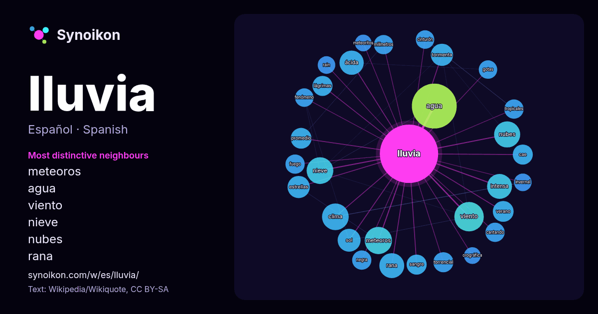

Español · lista de palabras del día
lluvia
“rain” · Las palabras encontradas a su alrededor en 1158 apariciones de Wikipedia, Wikiquote.

Vecinos más característicos
- meteoros 25×
- agua 24×
- viento 23×
- nieve 22×
- nubes 21×
- rana 20×
- ácida 20×
- intensa 19×
- clima 17×
- tormenta 14×
- torrencial 14×
- lágrimas 14×
- cae 13×
- sol 13×
- milímetros 12×
- cantando 12×
- promedio 12×
- gotas 12×
- sangre 11×
- rain 11×
× = cuántas veces más que en el texto general de Wikipedia.
Vecinos más frecuentes
- agua 65
- viento 28
- año 27
- meteoros 24
- clima 23
- nieve 23
- nubes 22
- intensa 20
- rana 20
- ácida 19
- mes 19
- película 19
- forma 17
- sol 17
- estrellas 16
- temporada 16
- tormenta 16
- estación 15
- tierra 15
- dios 14
En contexto
- no sería lluvia, sino virga, y si el diámetro es menor, sería llovizna. La lluvia se mide en litros caídos por metro cuadrado. La lluvia depende de Wikipedia snippets · Lluvia
- Una lluvia de meteoros o lluvia de estrellas es un evento celeste en el que se observa la irradiación de varios meteoros desde un punto en el cielo nocturno Wikipedia snippets · Lluvia de meteoros
- Se denomina lluvia ácida a la lluvia o niebla en la que el potencial de hidrógeno (pH) de sus gotas es menor a 5. La lluvia ácida se forma cuando la humedad Wikipedia snippets · Lluvia ácida
- La lluvia engelante o lluvia gélida es un tipo de precipitación que comienza a caer desde las nubes a la superficie en forma de nieve, a grandes alturas Wikipedia snippets · Lluvia engelante
- La lluvia orográfica es la lluvia que se produce por el ascenso del aire húmedo al encontrarse con un obstáculo orográfico, como una montaña. En su ascenso Wikipedia snippets · Lluvia orográfica
- varias causas, entre ellas la lluvia de animales. En 2012 llovieron gambas en el sur de Sri Lanka Cada año, hay una lluvia de peces en la ciudad de Yoro Wikipedia snippets · Lluvia de animales
- origen a nubes del tipo de cumulonimbos con lluvias intensas. El diámetro del cumulonimbo que produce una lluvia de convección puede variar notablemente, Wikipedia snippets · Lluvia de convección
- semillas. El palo de lluvia puede ser inclinado, dejando que las piedrecillas o las semillas caigan, y creando un efecto similar a la lluvia —la intensidad Wikipedia snippets · Palo de lluvia
Más palabras
- agua
- arte
- bosque
- caballo
- camino
- campana
- canción
- ciencia
- ciudad
- clima
- comida
- corazón
- desierto
- dinero
- dios
- espejo
- estrella
- familia
- fuerza
- gato
- historia
- invierno
- isla
- jardín
- lengua
- madre
- mapa
- miel
- montaña
- muerte
- naturaleza
- oro
- otoño
- pan
- perro
- puente
- reloj
- sal
- salud
- silencio
- sombra
- tiempo
- tormenta
- trabajo
- tren
- té
- verano
- verdad
- vida
Precalculado el 2026-10-09 con los ajustes predeterminados (±5 palabras, corpus mediano). El mapa interactivo puede actualizarlo con datos en vivo.
Interfaz traducida automáticamente; se agradecen correcciones.